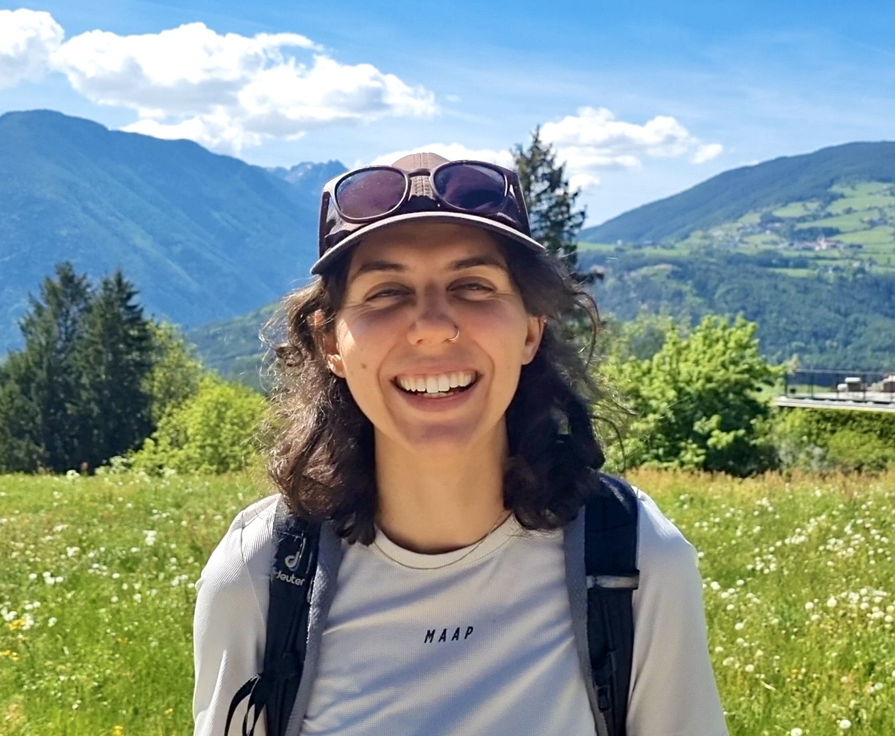

I'm a geographer & a cartographer.
I craft research and maps that blend people, landscapes, and stories.
I’m Federica, but everyone calls me Fede. I was born near the Dolomites, in Northern Italy, but since then I’ve lived in many places, including Berlin, the South of France, Taipei, Munich, Vienna and Dresden. Travelling and exploration have always been my passions, and through cartography, I found a way to translate the beauty and diversity of the world into maps and graphics.
I have a Master's in Cartography, jointly recognised by the Technical Universities of Munich, Vienna and Dresden. Even though cartography is my specialisation, I also have experience in GIS for spatial analysis, data design, web design, UX/UI and research.
Before moving into cartography, I worked in field ethnography, grant writing and NGO management. Today, I can often be found at a desk with QGIS, Colab, Adobe Illustrator, Visual Studio Code and a couple of Google documents open at the same time.
The rest of my time, I spend running on trails, bikepacking and making music.

I am currently open to freelance and contract-based work on GIS, cartography, information and web design projects (or more - I'd be excited to learn something new!)
Email me: federicaballardini@outlook.com
Find me on LinkedIn or in Innsbruck!